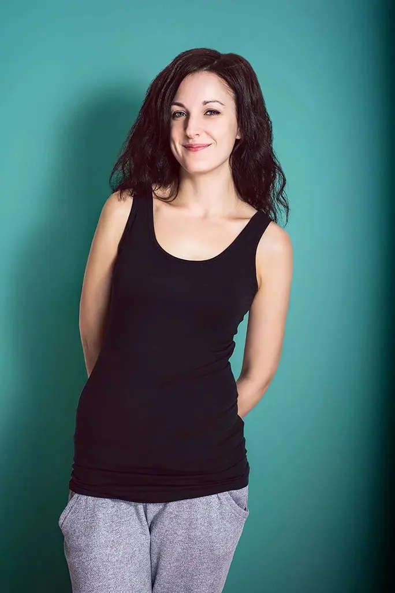

01 / 03
Produktová fotografie
Fotím produkty na čistém bílém pozadí pro e-shop i ve tmavé scéně s promyšleným světlem. Od počítačových skříní po kosmetiku a obuv.
Zeptat se na termín→


Produkty ve správném světle
Zeptat se na termín →(01) Ahoj
Jmenuji se Přemysl Aubrecht, jsem grafický designér z Prahy a fotím produkty, reklamní kampaně i portréty. Protože znám obě strany, fotky pro vás připravím tak, aby rovnou fungovaly v e-shopu, na banneru nebo v tisku.
(02) Co fotím
01 / 03
Fotím produkty na čistém bílém pozadí pro e-shop i ve tmavé scéně s promyšleným světlem. Od počítačových skříní po kosmetiku a obuv.
Zeptat se na termín→02 / 03
Focení pro reklamní kampaně, bannery, microsity a tiskovou inzerci. Fotky rovnou ladím s grafikou celé kampaně.
Zeptat se na termín→03 / 03
Ateliérové portréty na jednoduchém pozadí i přirozené portréty venku. Hodí se na web, do firemní prezentace i pro vás osobně.
Zeptat se na termín→(04) Postup
Od první zprávy po hotovou galerii.
Krok 1 z 4
Probereme, co budeme fotit a kde fotky použijete: v e-shopu, v kampani, nebo v tisku. Podle toho zvolíme styl a pozadí.
Krok 2 z 4
Připravím nasvícení na míru produktu, ať už jde o čisté bílé pozadí, nebo tmavou atmosférickou scénu.
Krok 3 z 4
Nafotím produkty, reklamní scény nebo portréty podle domluvy, s důrazem na detail a materiál.
Krok 4 z 4
Fotky sám vyretušuji a připravím ve formátech, které potřebujete. Když je potřeba, navážu i grafikou.

Světlo, retuš i grafika z jedné ruky.

(05) Za objektivem
Jsem grafický designér z Prahy a fotoaparát je pro mě přirozenou součástí práce. V letech 2013 až 2016 jsem v CZC.cz působil jako senior grafický designér a staral se o klíčové vizuály všech kampaní značky. K tomu patřilo focení, retuš, bannery, microsity i animace produktů na konci televizních reklam.
Na volné noze pracuji od roku 2006. Navrhuji weby, landing pages, newslettery, loga a firemní identitu a k tomu fotím. Spolupracoval jsem na kampaních s výrobci jako Microsoft, Lenovo, Sony nebo Dell, takže vím, co od produktové fotky čeká marketing.
Nejvíc mě baví práce se světlem. Rád si hraju s tím, jak nasvítit láhev, kovovou skříň nebo lesklý obal, aby vynikl tvar i materiál. Kromě produktů fotím také reklamní scény s lidmi a portréty, v ateliéru i venku.
Přemysl
Přemysl Aubrecht · Produktový a reklamní fotograf
Ano. Fotím čisté produktové fotky na bílém pozadí i výraznější snímky ve tmavé scéně nebo s barevným pozadím pro kampaně.
Ano, retuš a úpravy fotek dělám sám. Jako grafik je umím připravit přesně pro použití, které plánujete.
Ano. Jako grafický designér dělám bannery, tiskovou inzerci, microsity i firemní identitu, takže focení a grafiku můžete mít od jednoho člověka.
Cena závisí na počtu produktů, náročnosti nasvícení a rozsahu postprodukce. Napište mi, co potřebujete, a pošlu vám nabídku.
(07) Kontakt
Napište pár vět o tom, co si představujete, a termín, který se vám hodí.